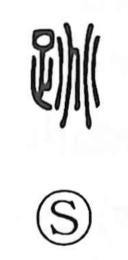

跳

Uncategorized
Kun: haneru, tobu, odoru | On: chou
to jump ・ to leap ・ to spring up
Explanation
A phono-semantic character with 兆 as the phonetic element. In the oracle-bone tradition, 兆 depicts the radiating fissures that burst across a tortoise plastron when it is heated for divination—an image of force suddenly breaking outward. That same element also signals the on-reading chō. In related graphs like 挑 it conveys a forceful challenge; in 跳 it captures a vehement springing up, power first stored within and then released to the outside. Hence its use for actions such as haneru, tobu, and odoru—vivid movements of leaping or springing up.